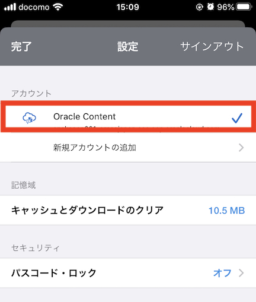
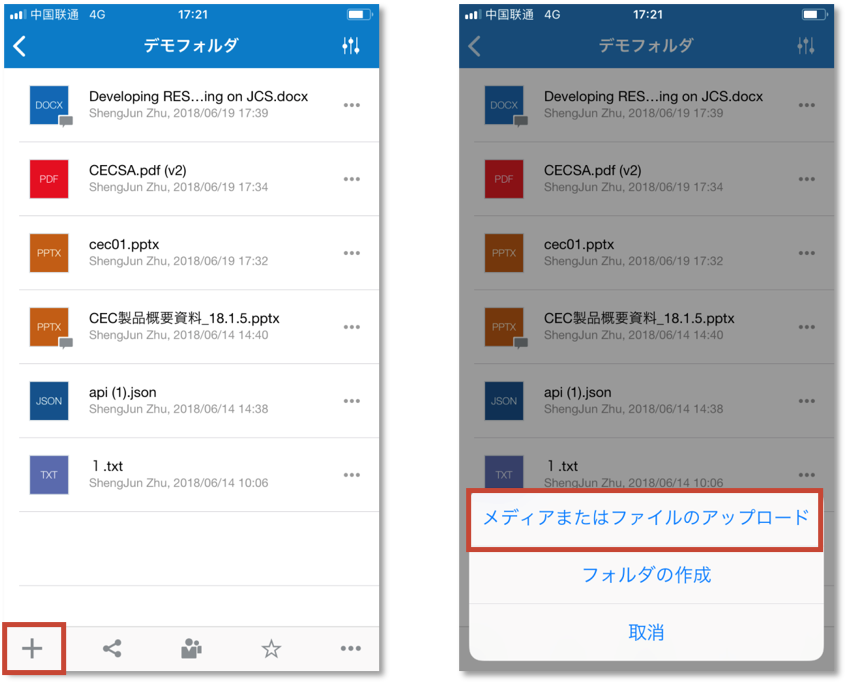
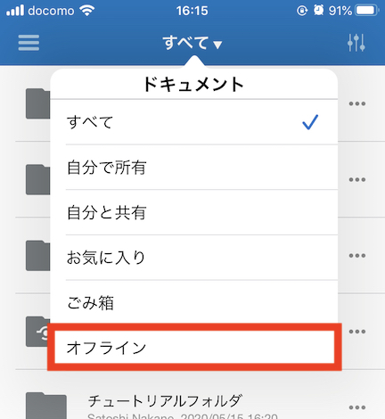
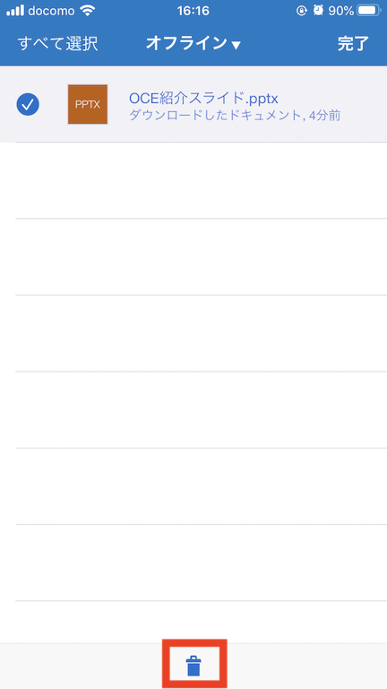
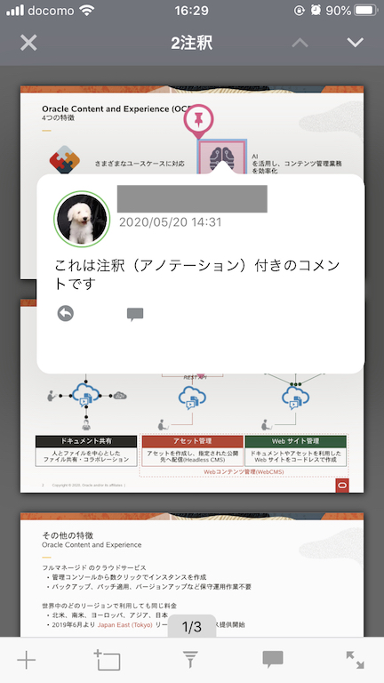
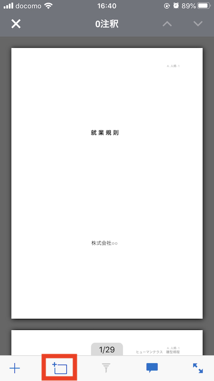
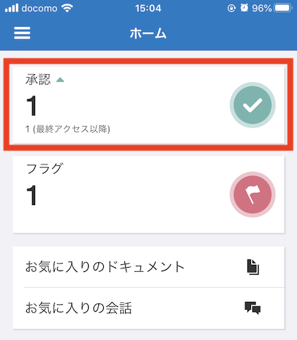

目次に戻る: Oracle Content and Experience のファイル共有機能を使ってみよう【初級編】
OCE のモバイル・アプリケーションを利用し、クラウド上のファイルやフォルダ、会話にいつでもどこからでも簡単にアクセスできます。OCE は、Android および iOS(iPhone/iPad) それぞれに対応したモバイルアプリケーションを提供します。サポートするモバイルOSの種類およびバージョンは、下記ドキュメントをご確認ください
モバイル・アプリケーションは、Web ブラウザとほぼ同じ操作を提供します。主な提供機能は以下の通りです
- ドキュメント
- ファイル・フォルダの表示
- フォルダの作成
- ファイルのプレビュー
- ファイルのアップロード
- デバイス上のファイルのアップロード
- カメラで撮影した写真のアップロード
- ファイルのダウンロード（オフライン利用）
- 共有
- メンバーリンクの共有
- パブリックリンクの作成
- ファイルの編集（Office アプリケーションがインストールされている場合）
- 会話
- 会話の表示、作成
- メッセージの投稿
- 注釈の表示、設定
- フラグ設定
- 通知フラグの確認
- 検索
- ファイル、フォルダ、会話ほかの横断検索
- アセット
- レビュー中アセットの表示
- アセットの承認、却下
- その他
- 割り当て容量の確認
- アカウントの追加・管理
- パスコード・ロック
この文書は、2020年5月時点での最新バージョン(20.2.2)を元に作成されてます
前提条件
- Oracle Content and Experience インスタンスを作成する
- OCE の利用ユーザーに OCE インスタンスの CECStandardUser もしくは CECEnterpriseUser アプリケーション・ロールが付与されていること
1. モバイル・アプリケーションのインストール
1.1 モバイルアプリのダウンロード
-
App Store もしくは Google Play にアクセスし、
Oracle Contentで検索します -
Oracle Content をインストールします

1.2 接続先 OCE アカウント情報の設定
-
ダウンロードされたOracle Contentアプリを起動します
-
サービスURL を入力し、「次」 をタップします
[TIPS]
ここで指定するサービスURLの形式は以下の通りです。/documents はつけません
https://<OCE_Instance>-<Cloud_Account>.cec.ocp.oraclecloud.com -
ユーザID と パスワード を入力し、「サイン・イン」 をタップします

-
ホーム画面が表示されます

1.3 モバイル・アプリケーションの管理設定
1.3.1 パスコード の設定
パスコードとは、モバイル・アプリケーションをロックするためのオプション設定で、4桁の数字を設定できます。この設定により、モバイルアプリケーション起動時にパスコードの入力が必要になり、モバイルデバイスの紛失などにより、第3者によるクラウドサービスへのアクセスを防ぐことができます
-
モバイル・アプリケーションを起動します
-
左上の メニュー をタップします

-
左下の 設定アイコン をタップします

-
「パスコード・ロック」 をタップします

-
「パスコードをオンにする」 をタップします

-
4桁のパスコードを設定します
-
「パスコードが必要です」 をタップし、パスコード入力が求められるまでの時間を設定します

[TIPS]
時間を極力短く設定することで、セキュリティを高めます -
完了 をタップします
[Memo]
iPhone/iPad で Touch ID や Face ID が有効化されている場合、それらを利用してモバイル・アプリケーションのロックを解除できます。
1.3.2 通知のカスタマイズ
-
モバイル・アプリケーションを開きます
-
左上の メニュー をクリックし、左下の 設定アイコン をタップします
-
通知をカスタマイズするアカウント（ここではOracle Content）をタップします

-
「プッシュ通知」 をタップします

-
プッシュ通知をカスタマイズします

[TIPS]
通常のモバイルアプリと同様に、デバイスの設定よりデバイスでの通知の表示方法（通知設定、音声、バッチ表示など）をカスタマイズできます。
例えば、ロック画面に通知メッセージを表示、モバイル・アプリケーションのアイコンに通知件数をバッチ表示、などが設定できます
1.4 複数OCEアカウントの管理
モバイル・アプリケーションは、最大5個 のアカウントを管理できます。ここではアカウントの追加と切り替え方法を説明します
1.4.1 新規OCEアカウントの追加
-
モバイル・アプリケーションを開きます
-
左上の メニュー をクリックし、左下の 設定アイコン をタップします
-
「新規アカウントの追加」 をタップします

-
アカウント名 と サービスURL を入力し、「次」 をタップします。
[TIPS]
ここで指定するサービスURLの形式は以下の通りです。/documents はつけません
https://<OCE_Instance>-<Cloud_Account>.cec.ocp.oraclecloud.com -
ユーザーID と パスワード を入力し、「サイン・アップ」 をタップします
-
「接続」 をタップします。新規OCEアカウントで接続されます
1.4.2 OCE アカウントの切り替え
-
モバイル・アプリケーションを開きます
-
左上の メニュー をクリックし、画面下の アカウント名 をタップし、OCEアカウントを選択します

2. 基本操作
2.1 カメラで撮影した写真をアップロードする
モバイル・アプリケーションより写真をアップロードします。ここでは、カメラで撮影した写真をそのままアップロードします
-
モバイル・アプリケーションを開きます
-
アップロード先のフォルダを開きます
-
左下の 「＋」 をタップします
-
「メディアまたはファイルのアップロード」 をタップします

-
カメラアイコン をクリックします
-
カメラが起動され、カメラアイコンが表示されます。この カメラアイコン をタップします

[Memo]
撮影済の写真をアップロードする場合は、デバイスに保存されている写真を選択します（複数選択可） -
カメラが起動されますので、写真を撮影します
-
「写真を使用」 をタップします（再撮影する場合は、「再撮影」をタップ）
-
「追加」 をタップします
-
撮影した写真がフォルダにアップロードされます

2.2 ファイルの検索
-
モバイル・アプリケーションを開きます
-
左上のメニューをタップし、「検索」 をタップします

-
検索キーワードを入力すると、Type-ahead 検索により候補を自動表示されます
-
すべてのリソースを検索（全文検索）する場合は、検索 をタップします（もしくは、”XXXのすべての結果を表示”をタップ）
-
検索結果が表示されます。タブを切り替えることで、ドキュメントや会話などに限定した検索結果を確認できます

2.3 ファイルのオフライン利用（ダウンロード）
ファイルをダウンロードすることで、オフライン状態でも素早くファイルを参照できます。ダウンロードされたファイルは、モバイル・アプリケーション内に暗号化された形で保存されます
2.3.1 ファイルのダウンロード
-
モバイル・アプリケーションを開き、ファイルをプレビューします
-
共有アイコン をタップします

-
「オフライン用に保存」 をタップします

-
「はい」 をタップします
-
ファイルがデバイス内にダウンロードされます
2.3.2 ダウンロードしたファイルを表示する
-
モバイル・アプリケーションを開きます
-
ドキュメントを開き、「オフライン」 をタップします

-
ダウンロードしたファイルが表示されます。ファイルをタップすると、ファイルのプレビューが表示されます

-
ダウンロードしたファイルを削除する場合は、ファイルをロングタップ（長押し）で選択し、ごみ箱アイコン をタップします

2.4 注釈（アノテーション）
Web ブラウザと同様に、モバイル・アプリケーションからファイル紐付け会話へのメッセージ投稿、注釈の設定や表示ができます。ここでは、設定済注釈の表示と注釈の追加方法を紹介します
2.4.1 注釈の表示
-
モバイル・アプリケーションで、注釈が設定されたファイルをプレビューします

[TIPS]
ファイル紐付けの会話が作成されている場合、ファイルに会話アイコンが表示されます -
右上の注釈アイコンをタップします

-
設定された注釈が画面上に表示されます。タップすると、注釈に付加されたコメントを確認できます

2.4.2 注釈の追加
-
モバイルアプリケーションで、ファイルをプレビューします
-
注釈アイコン をタップします
-
注釈を設定する場合は、左下の ＋アイコン 、もしくは 範囲指定アイコン を利用します。ここでは範囲指定アイコンをタップします

-
注釈を設定する箇所をロングタップ（長押し）で選択し、メッセージを入力します。最後に 「投稿」 をタップします

-
注釈が設定されます。注釈をタップすると、投稿されたメッセージを確認できます

2.5 承認済アセットの確認と承認
モバイル・アプリケーションは、「レビュー中」のアセットの確認と承認/却下の操作ができます
-
モバイル・アプリケーションを開きます
-
ホーム画面の 承認 をタップします

-
承認待ちアセットの一覧が表示されます。アセットを 承認（もしくは 却下）します

-
レビュー中アセットをタップし、アセット紐付けの会話へのメッセージ投稿、およびアセットに対する注釈の設定ができます。注釈の設定方法は、前の手順と同じです
以上でこのチュートリアルは終了です。